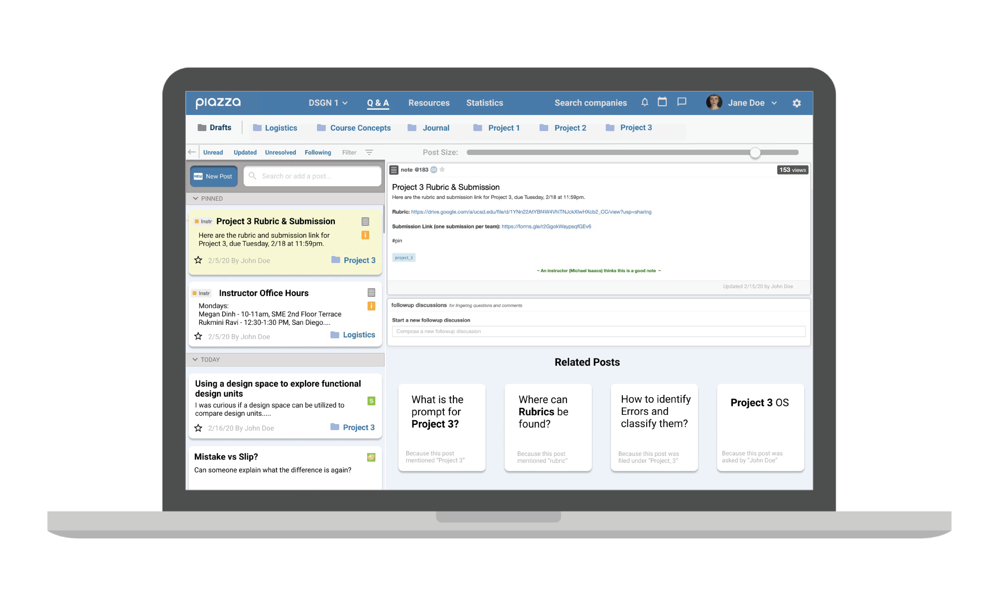

Piazza Redesign
Overview
- Timeline: 3 weeks during Winter 2020
- Team: Jennifer Pham, Ishaan Bose, Ethan Lan, Audrey Zhao
- Roles: Researcher, Designer
Background
You want to find the answers to your questions about your current class as quickly as possible, so you turn to your online forum, Piazza, for the class. You try to search and scroll for the posts that possibly contain the answer, but there’s too much information and too many confusing features that you completely miss those posts!
Piazza is an online forum that is commonly found in STEM classes. My teammates and I have relied on the platform to find answers or post questions. However, we all have run into problems when interacting with the features and layout of Piazza. We found that it’s compact interface leads to confusing and disorganized features. The platform offers many different ways for users to search for information, but most of them are not utilized or even noticed.
Problem Statement
With confusing label placements and sorting features, Piazza may give both students and instructors difficulty finding the answers to their questions, which can then lead to post redundancy and searching inefficiency.
Into the Wild: User Research
We first needed some insight on users’ interactions, needs, and frustrations with Piazza. We went to popular spots on campus and asked people to perform tasks on Piazza.
More specifically, we went around the UCSD campus and surrounding areas and interviewed 15 students and faculty. We first gathered some demographic information such as major, year, and Piazza proficiency level. Next, we handed them a laptop that’s open to a specific post in our Design 1 Piazza. We then asked them to find certain information as if they were a student in the class. We recorded the time until they provided some answer. We stopped the timer when they provided the expected answer, “I don’t know”, or “I’ll make a post”.
What did we find?
When users came across problems, they became frustrated as their time felt wasted. An online forum should allow users to efficiently and quickly find the answers to their questions.
By observing the actions and answers from the interviewees, we discovered there were actually a lot of issues with Piazza features! Let’s step through these problems below.
 There is a one character difference (space vs. dash) between the search terms.
The results were very different: the “dash” search leads to results, but “space” dash leads to no results.
There is a one character difference (space vs. dash) between the search terms.
The results were very different: the “dash” search leads to results, but “space” dash leads to no results.
Incorrect Terms and Typos in the Search Bar
If the user were to input something with similar or wrong spelling, relevant or desired posts may not appear. So the user would have to have precise spelling/keywords. This issue could hinder search flow and efficiency.
Unseen and Unused Folders
There is a feature at the top of Piazza that I personally had not noticed for a long time: the folders feature. The folders are created by the instructors to place relevant information and posts together. This feature is meant to help users better search for relevant information.
My team thought that the feature did not have a clear signifier to its existence. We figured that a feature that can increase search efficiency should be more visible to users.
 When the mouse hovers over one of the folders labeled “project_1”, the text color changes only slightly. The same happens for the other labels.
When the mouse hovers over one of the folders labeled “project_1”, the text color changes only slightly. The same happens for the other labels.
 Scrolling through so many posts make the users confused and overloaded with information.
Scrolling through so many posts make the users confused and overloaded with information.
Too Much Scrolling!
Below the search bar, there’s a section where the users can scroll through posts by the date and time posted. The posts are very close together, and if there are a lot of posts, the user may not be able to pick up all the information shown in the previews. Therefore, they may skip over desired posts, leading to search inefficiency.
In fact, most of the interviewes did not utilize this feature. Instead, they opted to use the search bar (but that also has it's own problems as I described before).
Inconsistent Dates
Posts on Piazza have certain sections that date when the post was made or updated. However, specific dates are not shown on the post page itself.
Interviewees seemed to have a difficult time when determining specific dates. Because the text is fairly small and off to the side, we figured that users are more unlikely to look at them when reading through the contents of the post. In addition, if the post was made within a week of the current date, the boxed area on the left would be labelled by the day of the week (Monday, Tues, etc.) rather than by month/day/year. We thought that this inconsistency in the form of dates would be very confusing to the user.
 Piazza displays the post was made or updated “X days ago” (or by a weekday) at the bottom right. There’s an additional date section on each post preview in the scroll section. In the picture to the right,
the red rectangles indicate where the posts are dated.
Piazza displays the post was made or updated “X days ago” (or by a weekday) at the bottom right. There’s an additional date section on each post preview in the scroll section. In the picture to the right,
the red rectangles indicate where the posts are dated.
Trade-offs
Before we moved to the actual redesign of the platform, we considered the trade-offs that Piazza would have. We wanted efficiency to be our main focus, but we also had to consider aesthetic and number of features.

Aesthetic versus Efficiency
Piazza as a website is not the most aesthetically pleasing. Piazza presents a lot of text and information on the page at once, rather than taking a more aesthetic approach to it, like using minimalism. Minimalism is often aesthetically pleasing and easy to use, because it lets the user engage with the product at the core level rather than clustering it with too much info at once. In other words, this plays into the trade-off signifiers versus cognitive load - showing more things can be easier for the user, but overload them with information, making the design worse.
On the other hand, the appearance or aesthetic of the website can also have a role in affecting the efficiency, which indicates how quickly a user can find what they are looking for, as a certain design will have different signifiers and affordances. For example, as we described before, Piazza has some weak signifiers to the folders feature. If the folders could help users more efficiently search for the desired information, their appearance/aesthetic should be able to draw the user's attention.
Features versus Efficiency
This trade off was primarily oriented towards the user search capabilities and navigation as a whole. Making the application highly efficient makes it easy to use and gets the user what they want right away, which is always a desirable outcome for overall user experience. However, the features and complexity that it comes with, while negative in its connotation, is implicit in the addition of capabilities that can directly improve user experience and keep a product sustainable.
In the current market, improvement and iterating upon a product is essential to remaining relevant and continue to be consumed. With a lack of new and updated features, convincing new users to join the service can be hard, which is why most companies yield to the “featuritis” problem mentioned by Don Norman in chapter 7 of his book, “Design of Everyday Things.” This clash occurs in Piazza going towards more complexity than minimalism in terms of features, as shown by the variety of links, breadcrumbs, and filter options that are shown on the front page. This allows the user to tailor their search experience to their needs, but also introduces a sense of clutter that proved to confuse new users, as shown by our data when none of the new users tried the category or folder functions, or tried to distinguish using the pinned posts. This can be why complexity and clutter of features is often a negative aspect when considering a product, because designing for the vast majority is usually the goal.
The Redesign
Once we gathered and analyzed the data from the interviews and our observations, we moved to Figma to build our redesign. The final design is show below!

And here is the before as a comparison:
While retaining the colors and general website structure of Piazza, we redesigned the aesthetic and layout of the features. The general post and font size were increased in the scrolling bar on the left. When you click on a post, the page displays the content, modified date labels, and a new feature: a 'Related Posts' section. This section was created as a way to help search efficiency. Perhaps a student may land on this page but want to see similar posts or did not find the answer in the current post. This section can help increase post-finding efficiency.
The folders feature is also made more visible, with blue and enlargened signifiers. You can view how it works in the GIF below!
The End!
And that's our redesign of Piazza! In this project, we focused heavily on conducting and analyzing user research. These observations and interpretations really helped us understand our audience and ways to improve the interface. Through our redesign, we made question-asking and finding flow more efficient, information redundancy across posts is minimized, and possible feature are clearly identifiable.
With only about 3 weeks to complete this project, we have a lot of room for possible improvements. If I had more time, I would continue iterating on these designs by scheduling user interviews, where I would have interviewees test and comment on the interface. Based on their responses and my team's brainstorming, we'll tweek our redesigns until it reaches the perfect balance between aesthetic vs. festures vs. efficiency.
Thanks for reading! If you have any questions, I'd love to talk!